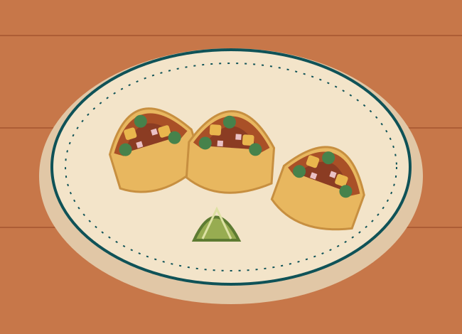

Del Maguey Vida $9
Oaxaca. Smoky and bright, our house pour.
OAXACA & PUEBLA, AT HOME IN AUSTIN
Family cooking in East Austin. From the masa to the hot sauce, a little love goes into everything.
Fictional restaurant concept. Come explore the menu.

THE RECIPE STAYS.
THE TABLE GETS BIGGER.
THE STORY / A FICTIONAL FAMILY SINCE 2009
In the story behind Casa Lupita, Guadalupe Ramos began with eight tables and her mother’s mole recipe. Her son now runs the kitchen. Her granddaughter runs the bar. The recipe stays in the family.
Corn ground each morning. Chiles from Oaxaca. Cooking the way you eat at home: slowly, with a little too much food on the table.
This is a fictional family and restaurant, brought to life as a design concept.
SLOW COOKED. WORTH THE WAIT.
Three moles, slow cooked for two days, served with chicken, pork or roasted squash. The concept evening pairs them with son jarocho music from 7 pm.
A sample weekly event, not a live schedule or reservation.
Make a night of itFROM THE BAR
Eight sample pours from Oaxaca and Jalisco. For guests aged 21 and over. Enjoy responsibly.
Oaxaca. Smoky and bright, our house pour.
Oaxaca. Herbal and clean.
Oaxaca. Wild agave, floral, rare.
Oaxaca. Distilled with roasted corn.
Jalisco. Classic tequila, sweet agave.
Jalisco. Gentle oak and vanilla.
Jalisco. Rich, caramel, long finish.
Jalisco. Wild and funky.
A flight of three, with orange and sal de gusano. $24 in the sample menu.
AROUND OUR FICTIONAL TABLE
For the curious.
Explore a new mole.
For the family.
Share another tortilla.
For the evening.
Stay for the conversation.
No verified customer reviews. The original brief’s testimonial names and platform ratings are not presented as real endorsements.
SAVE A LITTLE ROOM
Example telephone: (512) 555 0164
| Tuesday to Thursday | 5 pm to 10 pm |
|---|---|
| Friday & Saturday | 5 pm to 11 pm |
| Sunday brunch | 11 am to 3 pm |
| Monday | Closed |
This is a fictional location. No reservation provider is connected and no table can be booked here. A real restaurant’s official booking link would open externally.
GOOD COMPANY.
ONE MORE TORTILLA.
SEE YOU AT THE TABLE.